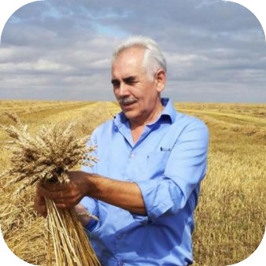

Цифрлық агрономиялық платформа
Егістікті басқару
тәсілін өзгертеміз
Өнім мен қаражаттың қай жерде, не себепті жоғалатынын анықтауға және осы маусымда қандай шаралар қабылдауға болатынын түсінуге көмектесеміз.
AgroInn қалай жұмыс істейді
Топырақ кескінінен
нақты шешімдерге дейін
Терең қабаттардың тығыздалуы, тұздануы немесе ылғал сыйымдылығының төмендігі тамырдың өсуін тежеп, өнімділікті төмендетуі мүмкін.

-
Топырақтың 3D кескінін жасаймыз
0–200 см тереңдіктегі қабаттарды зерттеп, тамырдың дамуын және өсімдікке қолжетімді ылғал мен қоректік заттарды шектейтін ықтимал факторларды анықтаймыз.
-
Егістік деректерін салыстырамыз
Топырақ қасиеттерін жауын-шашын мен жел туралы көпжылдық деректермен, жер бедерімен және егістіктің экожүйесімен бірге талдаймыз.
-
Іс-қимыл жоспарын әзірлейміз
Агрономдар мен топырақтанушылар қорытындыларды тексереді. Шаруашылық есеп, технологиялық карта және жұмыс жоспарын алады. Бұл деректерді AgroInn-Agent қолданады.
-
Егістікті жыл бойы бақылаймыз
Ауытқуларды дер кезінде байқау үшін топырақтың жай-күйін, ауа райын және дақылдардың дамуын бақылаймыз.
Егістік мониторингі
AgroInn-Agent шаруашылық агрономымен бірге жұмыс істейді
Агент әр егістік бойынша деректерді талдайды, тәуекелдерді анықтайды және нені тексеру, жұмысты қай уақытқа жоспарлау керегін шешуге көмектеседі.
Көрсетілімді көру
Егістің жай-күйі
Вегетациялық индекстер егістің әркелкілігін байқауға және тексерілетін учаскелерді таңдауға көмектеседі.

Топырақтың жыртылатын қабаты
0–30 см қабаттың талдау күніндегі қасиеттері, соның ішінде көлемдік тығыздығы мен ылғал сыйымдылығы.

Ауа райы және жұмысқа қолайлы уақыт
Жауын-шашын мен температура болжамы тұқым себуге және басқа да дала жұмыстарына қолайлы уақытты таңдауға көмектеседі.


AgroInn туралы
Топыраққа арналған ғылым
AgroInn-де агрономдар мен топырақтанушылар зерттеушілермен, инженерлермен және машиналық оқыту мамандарымен бірге жұмыс істейді.
Команданың бес елдегі агрономиялық кеңес беру тәжірибесі
2025 жылғы байқаудың финалисі


Қазақстандағы байланыс деректері
Егістігіңізді талқылайық
Шаруашылығыңыз туралы айтып беріңіз. Жағдайды бірге талдап, жұмысты қай алқаптан бастау керегін талқылаймыз.